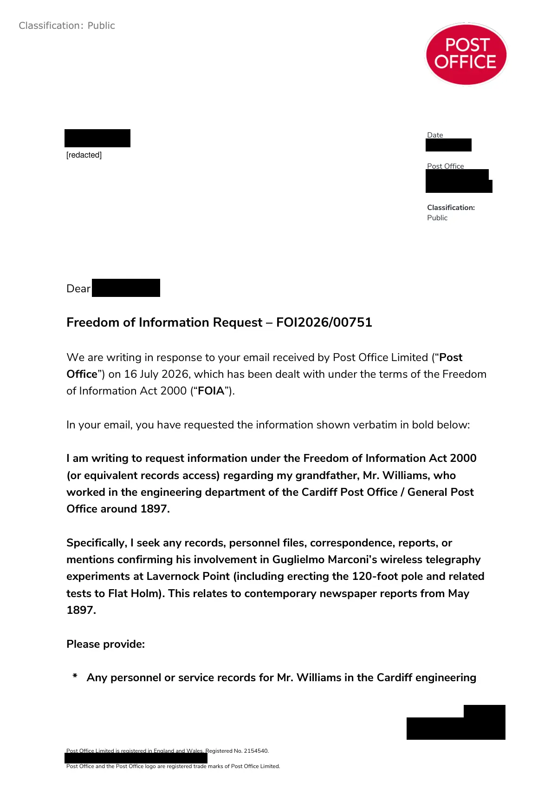

GHF-E106-R41-A1 reply attachment
FOI2026/00751 response

Transcript
Page 1 of 3 [address redacted] Post Office Limited is registered in England and Wales. Registered No. 2154540. [address redacted] Post Office and the Post Office logo are registered trade marks of Post Office Limited. Classification: Public Requester Date [address redacted] Post Office [address redacted] Classification: Public Dear Requester , Freedom of Information Request – FOI2026/00751 We are writing in response to your email received by Post Office Limited (“Post Office”) on 16 July 2026, which has been dealt with under the terms of the Freedom of Information Act 2000 (“FOIA”). In your email, you have requested the information shown verbatim in bold below: I am writing to request information under the Freedom of Information Act 2000 (or equivalent records access) regarding my grandfather, Mr. Williams, who worked in the engineering department of the Cardiff Post Office / General Post Office around 1897. Specifically, I seek any records, personnel files, correspondence, reports, or mentions confirming his involvement in Guglielmo Marconi’s wireless telegraphy experiments at Lavernock Point (including erecting the 120-foot pole and related
Read more
tests to Flat Holm). This relates to contemporary newspaper reports from May 1897. Please provide: * Any personnel or service records for Mr. Williams in the Cardiff engineering [redacted] Page 2 of 3 postoffice.co.uk Classification: Public Classification: Public department circa 1897. * Documents referencing "Mr. Williams" in connection with Marconi’s demonstrations. * Any other relevant historical files from the GPO telegraph/engineering teams. I am ultimately seeking any record about my great grandfather Mr Williams of Great House Farm, Llandough, Cardiff (formerly Vale of Glamorgan). Not to be confused with Great House Farm, Llandough, Cowbridge, Vale of Glamorgan. And his role in the Marconi experiment. And before and after Marconis stay with our family in our home in 1897. We can confirm we do not hold the information you have requested. Post Office separated from Royal Mail Group (“Royal Mail”) on 01 April 2012; who may have held the information you are seeking. However, given the historical nature of your request, it is likely that The Postal Museum, which holds and cares for the archives of Royal Mail Group plc, and Post Office Limited, may hold details of your request. The Postal Museum is one of the oldest business archives in the world and continues to collect and care for the records of the two businesses to this day: The Archive Open Wednesday to Friday and second Saturday of each month (except Bank Holidays) 10:00 - 16:30 For more information and to book an appointment, please visit The Archive page: https://www.postalmuseum.org/collections/the- archive/?_gl=1*pwogez*_up*MQ..*_gs*MQ..*_ga*MTYwODU4NTI3MC4xNzg0MjAx ODkx*_ga_FVHFC2XYM3*czE3ODQyMDE4OTAkbzEkZzEkdDE3ODQyMDE5OTAk ajYwJGwwJGgwJGROZllac3Q1UXFzcUh2LVA2aEg3a2YtYVdPZ0hhSjVhR1dn&gcli d=EAIaIQobChMI_7ej_Y3XlQMVVIpQBh0rHzZfEAAYASAAEgJWm_D_BwE Page 3 of 3 postoffice.co.uk Classification: Public Classification: Public If you are dissatisfied with the handling of this response, you do have a right to request an internal review. You can do this by writing to the address above within 40 working days of receipt of this response stating your reasons for your internal review request or alternatively, by emailing [email redacted]. If, having requested an internal review by Post Office, you are still not satisfied with our response you also have a right of appeal to the Information Commissioner at: Information Commissioner's Office [address redacted] Wilmslow [address redacted] Telephone: [phone redacted] https://ico.org.uk Yours sincerely, Information Rights Team [email redacted] https://corporate.postoffice.co.uk/en/governance/access-to-information/access-to- information/ Post Office Limited is committed to protecting your privacy, information about how we do this can be found on our website at www.postoffice.co.uk/privacy
Artifact description
| Catalogue ID | GHF-E106-R41-A1 |
|---|---|
| What it is | PDF document from Post Office Limited. Attached to an email received on 24 July 2026. 3 pages. |
| From | Post Office Limited |
| Email received | 24 July 2026 |
| Their reference | none given |
| Pages | 3 |
| File | FOIA Response - FOI2026_00751.pdf (72 KB) |
| State | Read |
Our integration
Concern to test: whether this reply answers the question as asked, or a narrower one. Not checked against the original request wording here.
What cuts against the case: a covering letter, form or acknowledgement decides nothing either way; it is kept so the thread is complete.
Related: The covering email · Timeline · Disclosure Dartboard